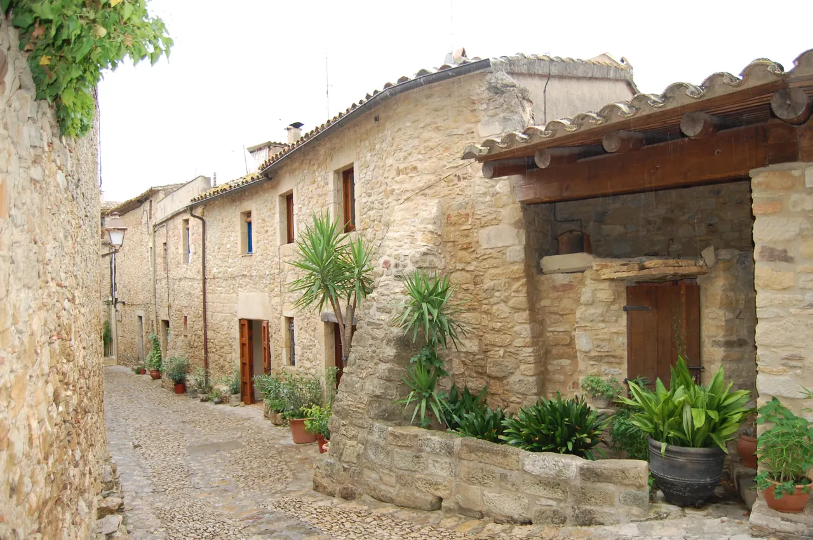

{kind=link}

Calella de Palafrugell
흰색 회반죽 가옥과 아치 회랑(Les Voltes), 쪽빛 바위 만(Cove)을 잇는 카미 데 론다 해안 산책로가 있는 코스타 브라바의 원형 어촌.

이름인 페라탈라다(Peratallada)는 카탈루냐어로 '깎아낸 돌(Pedra tallada)'을 의미한다.
이 마을은 평범한 흙 위에 돌을 쌓은 것이 아니라, 단단한 거대 암반 자체를 정과 망치로 수직으로 파내어 7~8m 깊이의 거대한 해자(Fossat)를 파고, 그 파낸 암석으로 성벽과 주택을 지었다. 1969년 스페인 역사문화재로 지정되었으며, 카탈루냐 전역에서 가장 보존 상태가 완벽하고 손때가 덜 탄 원형 그대로의 중세 요새 건축 유적으로 평가받는다.
마을 외곽 해자 바닥에 서서 올려다보면 단단한 암반을 깎아낸 수억 번의 정 자국과 바퀴 자국이 1천 년 전의 시간 그대로 멈춰 있다.
팔스(Pals)가 정돈된 복원 고딕 마을이라면, 페라탈라다는 '바위와 해자의 날것 그대로의 거친 중세 요새'다. 마을에 들어가기 전에 반드시 외곽 해자(Fossat) 아래로 내려가 깎아지른 바위벽을 먼저 올려다보아야 이 장소의 진정한 무게감을 이해할 수 있다.
| 운영시간 | 공식 개방시간 고지 없음(상시 통행). 관광안내소는 Pl. del Castell 3 소재 재확인 |
|---|---|
| 휴무 | 마을은 연중무휴(중세 지구 자유 통행). 공식 휴무일 없음 재확인 |
| 예약 | 마을 산책은 예약 불필요. 포랄락 시청 주관 가이드 투어만 별도 신청 재확인 |
| 소요시간 | 75분 재확인 |
| 항목 | 상세 정보 |
|---|---|
| 위치 | 17214 Peratallada, Girona, Spain |
| 운영/요금 | 마을 자유 입장 / 무료 (Free Admission) |
| 주차 | 마을 외곽 공영 유료 주차장(Aparcament Peratallada) 완비 (성수기 주차 편리) |
| 인근 추천 | 팔스(Pals, 차로 10분), 토렌트(Torrent) 및 카탈루냐 도예 마을 라 비스발(La Bisbal d'Empordà, 차로 10분) |
🧭 관람 순서: 마을 외곽 주차장 → 북서쪽 해자(Fossat) 하단 관찰 → 포르탈 데 라 베르헤 정문 진입 → 플라사 데 레스 볼테스 광장 → 미로 골목 탐방 순으로 동선을 짤 때 가장 입체적입니다.
마을 북서쪽 성벽 외곽의 해자는 인공적인 수로가 아니라 자연 암반을 수직으로 파내려 간 8미터 깊이의 거대한 암반 협곡이다. 성벽이 흙 위에 서 있는 것이 아니라 천연 암반 자체가 성벽의 기초이자 방어벽 역할을 수행했다.
흰색 회반죽 가옥과 아치 회랑(Les Voltes), 쪽빛 바위 만(Cove)을 잇는 카미 데 론다 해안 산책로가 있는 코스타 브라바의 원형 어촌.

앙리 마티스와 앙드레 드랭이 야수파(Fauvism)를 탄생시킨 지중해 항구마을이자 마요르카 왕국의 해상 왕궁.

세계 최대 폭(23m)의 기둥 없는 단일 고딕 신랑과 11세기 창조의 태피스트리를 품은 카탈루냐 고딕의 걸작.

기원전 1세기 로마 성벽부터 14세기 카롤링거·중세 성벽을 따라 걸으며 구시가지 붉은 지붕과 피레네산맥을 360도로 조망하는 공중 산책로.

구시가지와 신시가지를 가르는 오냐르 강변의 파스텔톤 채색 가옥들과 구스타브 에펠의 붉은 철교.

엠포르다 평야가 내려다보이는 언덕 위에 완벽하게 복원된 카탈루냐 고딕 석조 요새 마을.